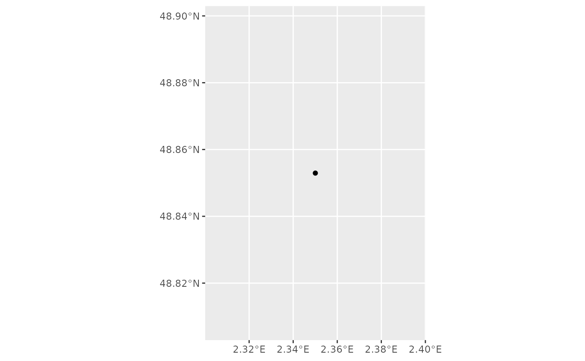
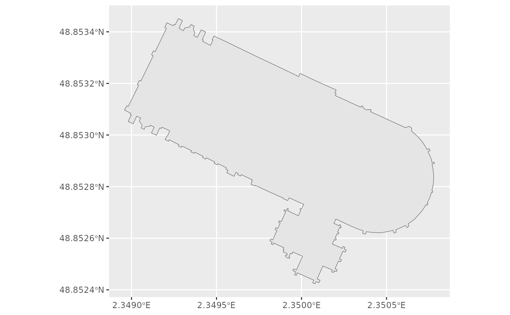

Address Lookup API for OSM objects in Spatial Format
Source:R/geo_address_lookup_sf.R
geo_address_lookup_sf.RdThe lookup API allows to query the address and other details of one or
multiple OSM objects like node, way or relation. This function returns the
spatial object associated with the query, see geo_address_lookup() for
retrieving the data in tibble format.
Arguments
- osm_ids
vector of OSM identifiers (
c(00000, 11111, 22222)).- type
vector of the type of the OSM type associated to each
osm_ids. Possible values are node ("N"), way ("W") or relation ("R"). If a single value is provided it would be recycled.- full_results
returns all available data from the geocoding service if TRUE. If FALSE (default) then only latitude and longitude columns are returned from the geocoding service.
- return_addresses
return input addresses with results if TRUE. Note that most services return the input addresses with
full_results = TRUEand setting return_addresses to FALSE does not prevent this.- verbose
if TRUE then detailed logs are output to the console. FALSE is default. Can be set permanently with
options(tidygeocoder.verbose = TRUE)- custom_query
API-specific parameters to be used, passed as a named list (i.e.
list(countrycodes = "US")). See Details.- points_only
Logical
TRUE/FALSE. Whether to return only spatial points (TRUE, which is the default) or potentially other shapes as provided by the Nominatim API (FALSE).
Details
See https://nominatim.org/release-docs/latest/api/Lookup/ for additional
parameters to be passed to custom_query.
See also
Other spatial:
bbox_to_poly(),
geo_amenity_sf(),
geo_lite_sf(),
reverse_geo_lite_sf()
Address Lookup API:
geo_address_lookup()
Examples
# \donttest{
# Notre Dame Cathedral, Paris
NotreDame <- geo_address_lookup_sf(osm_ids = 201611261, type = "W")
library(ggplot2)
ggplot(NotreDame) +
geom_sf()

NotreDame_poly <- geo_address_lookup_sf(201611261,
type = "W",
points_only = FALSE
)
ggplot(NotreDame_poly) +
geom_sf()

# It is vectorized
several <- geo_address_lookup_sf(c(146656, 240109189), type = c("R", "N"))
several
#> Simple feature collection with 2 features and 2 fields
#> Geometry type: POINT
#> Dimension: XY
#> Bounding box: xmin: -2.245115 ymin: 52.51704 xmax: 13.38886 ymax: 53.47949
#> Geodetic CRS: WGS 84
#> # A tibble: 2 × 3
#> query address geometry
#> * <chr> <chr> <POINT [°]>
#> 1 R146656 Manchester, Greater Manchester, England,… (-2.245115 53.47949)
#> 2 N240109189 Berlin, Deutschland (13.38886 52.51704)
# }